Префектура Киото · Киото · ремёсла
Somenotsukasa Yoshioka: как в Киото возвращают яркие цвета эпохи Хэйан
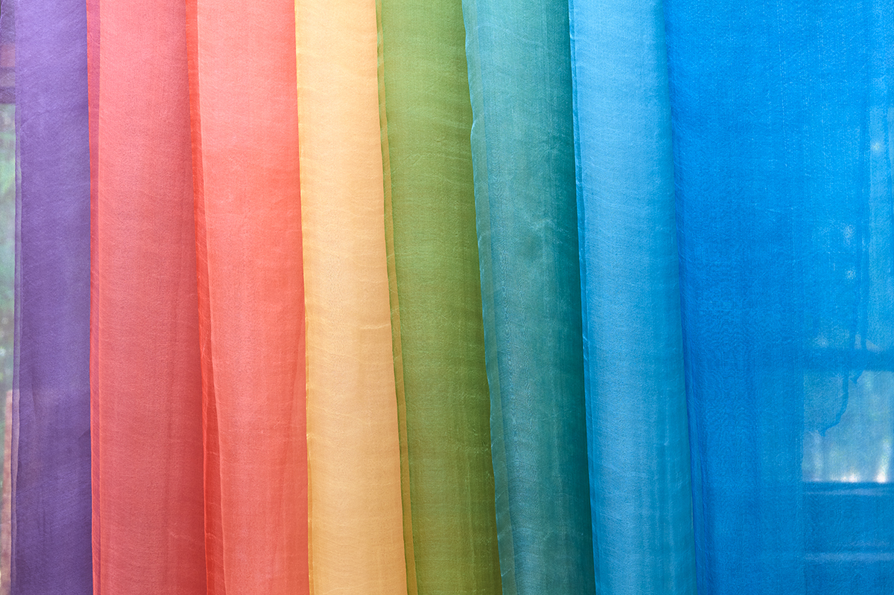
Чистые, почти светящиеся цвета на шёлке мало кто назовёт традиционными японскими. Но именно так одевался императорский двор тысячу лет назад, а приглушённые тона пришли позже. Киотская красильня Somenotsukasa Yoshioka по старинным книгам возвращает к жизни цвета эпохи Хэйан.
Мастерская
Двести лет растительных красок
Сегодня «японскими» чаще всего кажутся слегка мутные, приглушённые цвета. Они вошли в моду с эпохи Сэнгоку, с XVI века, под влиянием эстетики ваби-саби, то есть скромной простоты. Двор эпохи Хэйан (794–1185) одевался совсем иначе: его цвета были яркими, чистыми и сияющими.
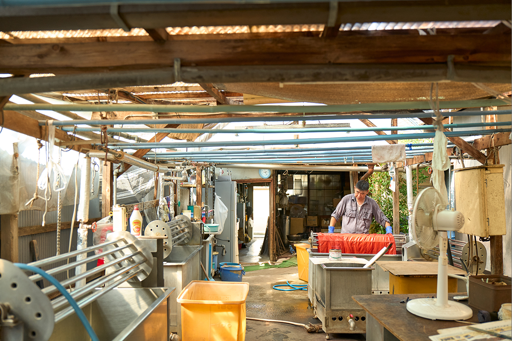
Somenotsukasa Yoshioka работает с эпохи Эдо, больше 200 лет. Мастерскую основали в старом центре Киото, после войны она переехала, и сегодня её цех стоит в районе Фусими, на юге города. Её работы многие видели, даже не зная имени: это занавеси норэн и полотнища у входа в старинные киотские лавки, а также арт-объекты в аэропортах Нарита и Ханэда, главных воротах страны.
Мастерская делает и искусственные цветы для подношений на старинных праздниках: на обряде Сюниэ (Омидзутори) в храме Тодай-дзи, на празднике цветов в храме Якуси-дзи, на празднике Ивасимидзу-мацури в святилище Ивасимидзу Хатимангу. В 2016 году набор образцов «Цвета Японии: 70 цветов» работы Somenotsukasa Yoshioka вошёл в постоянную коллекцию лондонского Музея Виктории и Альберта.
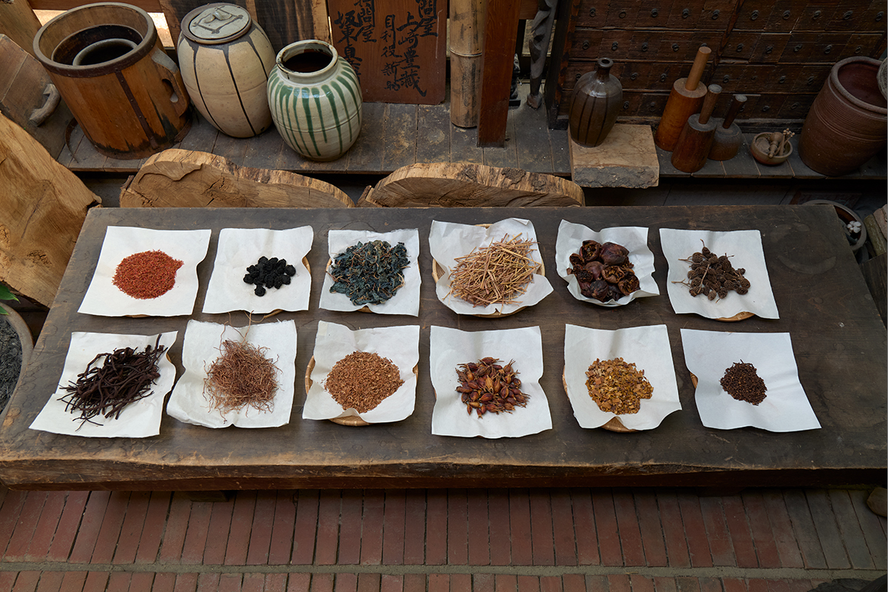
Главное отличие мастерской в том, что она красит только природными материалами, прежде всего растениями.
«Когда мастерскую основали, в конце эпохи Эдо, других красок, кроме растительных, просто не было. Даже слова "растительное крашение" ещё не существовало. С эпохи Мэйдзи, после 1868 года, из Европы пришли химические красители, и киотские красильни, которые любят всё новое, перешли на них. Мы тоже. Но мой дед, четвёртый глава мастерской, снова оценил растительные краски и с большим трудом восстановил их по старым книгам. Отец, пятый глава, Сатио Ёсиока, продолжил его исследования и в конце эпохи Сёва, в 1980-х, совсем отказался от химии»
Сараса Ёсиока, шестая глава мастерской
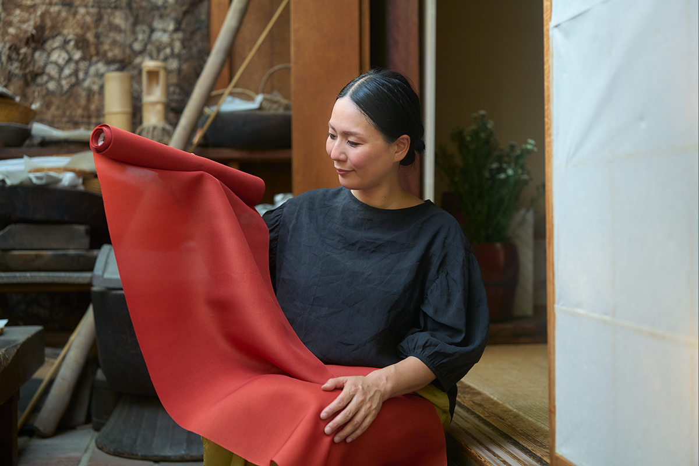
После университета Сараса Ёсиока работала продавцом в Issey Miyake, а потом по совету отца училась крашению и ткачеству в музее шёлка в префектуре Эхимэ. В 2008 году она пришла в мастерскую ремесленником, а в 2019 году, после внезапной смерти отца, стала шестой главой. Кроме работы в мастерской она участвует в проектах по восстановлению старинных придворных нарядов. В 2023 году она красила ткани для выставки «Повесть о Гэндзи: возрождённая красота нарядов придворных дам», которую устроили галерея и женский университет. Опыт помог ей точно передать цвета одежд, описанных в романе эпохи Хэйан.
Гэндзи
Цвета из «Повести о Гэндзи»
В «Повести о Гэндзи» Мурасаки Сикибу много пишет о цвете одежды героев, начиная с главного, Хикару Гэндзи, и по этим описаниям можно понять, как видели цвет люди эпохи Хэйан. Самая нарядная сцена в главе «Тамакадзура»: перед Новым годом Гэндзи дарит каждой из любимых женщин наряд с подобранным для неё сочетанием цветов. Здесь одна за другой появляются ткани модных тогда цветов. Сатио Ёсиока, историк текстиля, много лет пытался воссоздать цвета из «Повести о Гэндзи». Но как вернуть цвета, которые никто не видел тысячу лет?
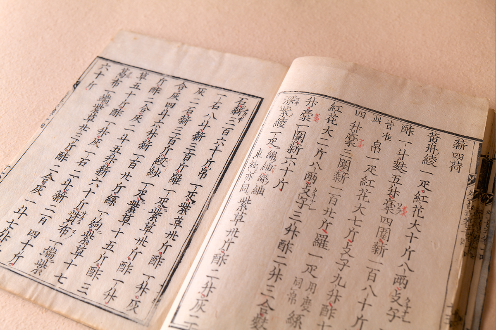
«Одежда эпохи Хэйан, к сожалению, не сохранилась. Но тогда цвет одежды зависел от ранга, и это стало подсказкой. В своде законов "Энгисики" 50 томов, и в четырнадцатом, о придворной швейной палате, есть раздел о крашении: там записаны названия цветов и материалы. Отец и мастера изучали такие записи и пытались по ним восстановить цвета»
Сараса Ёсиока
Красители в мастерской не только японские. Сафлор, из которого получают красный, родом из краёв между Эфиопией и Египтом. Красное дерево суо, или сапан, растёт на юге Индии и на Малаккском полуострове, и краситель прячется в сердцевине его ствола. «Искусство крашения пришло в Японию по Шёлковому пути, так что удивляться нечему», говорит Сараса Ёсиока.
В эпоху Хэйан одежду шили из шёлка или пеньки. Хлопок в Японии начали выращивать только в эпоху Эдо. Пеньку отбеливали на солнце, а придворных окутывал яркий и блестящий шёлк, окрашенный растениями.
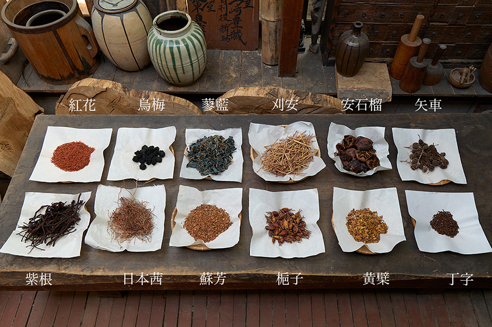
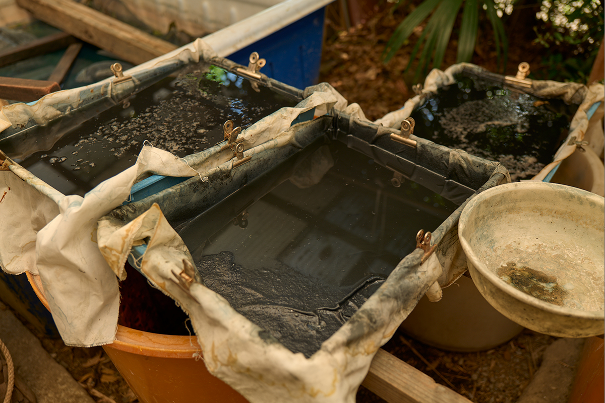
«Многие природные красители это ещё и сырьё для китайских лекарств. Лекарство принимают внутрь, а одежда защищает тело снаружи. Может быть, за этим стояла мысль носить на себе то, что полезно телу»
Сараса Ёсиока
Касанэ
Времена года в слоях одежды
В эпоху Хэйан японская культура всё больше отходила от китайских образцов, и вместе с ней менялось чувство цвета.
«В документах эпохи Нара, например в архиве сокровищницы Сёсоин, цвета названы прямо по красителям: "ямамомо", "кариясу". А в эпоху Хэйан всё больше цветов называют по цветам растений: "сакура", "хаги"»
Сараса Ёсиока
Придворные надевали много слоёв одежды и любовались сочетанием их цветов. Такие сочетания называли «касанэ-но иромэ», и им тоже всё чаще давали имена растений.
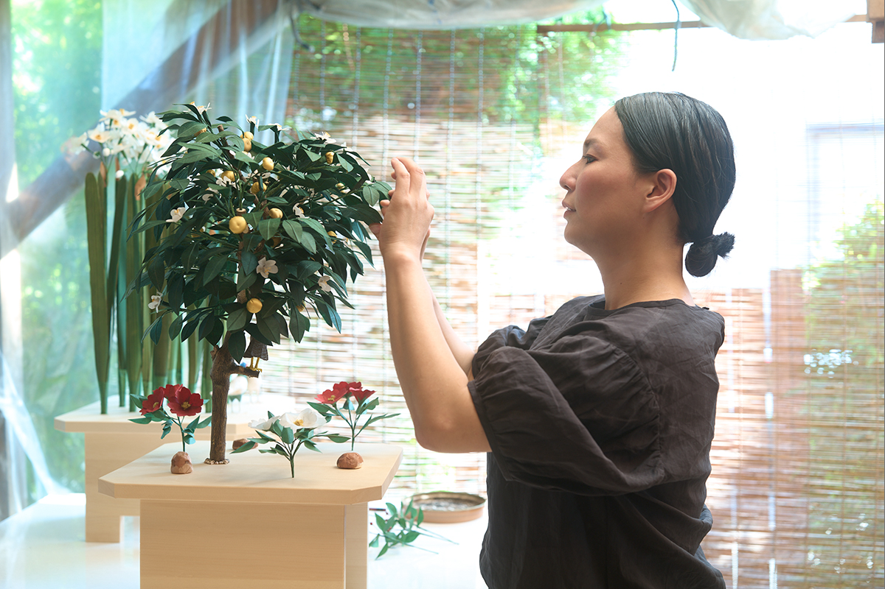
«Знатные дамы того времени обычно не показывали лица. Поэтому, чтобы выразить себя, они выпускали из-под бамбуковых штор дворца или повозки край рукава или подола. Это называлось "идасигину". Выбрать цвета точно по сезону и надеть их, наверное, и было тогдашней модой»
Сараса Ёсиока
Больше всего вариантов у «касанэ сакуры»: «сакура», «бэни-дзакура», «сиро-дзакура», «каба-дзакура», «усу-дзакура», «сакура-мои», «мацу-дзакура». Только в записях их больше двадцати. «В эпоху Нара цветком называли сливу, а в эпоху Хэйан уже сакуру, объясняет Сараса Ёсиока. Сегодня, говоря о сакуре, сразу представляют сомэй-ёсино, а тогда это была в основном горная сакура. У неё листья распускаются раньше цветов, поэтому к розовому иногда добавляли нежно-зелёный цвет молодой листвы».
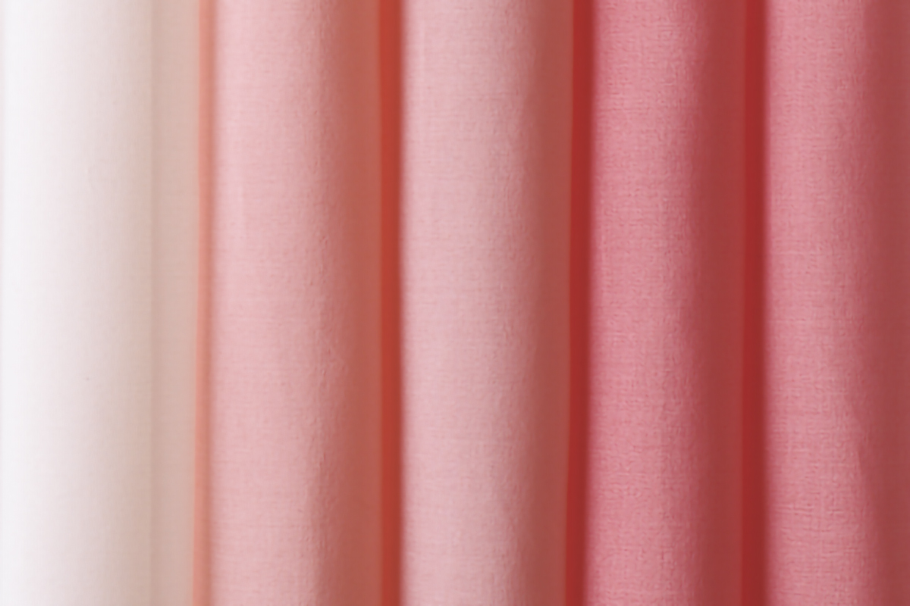
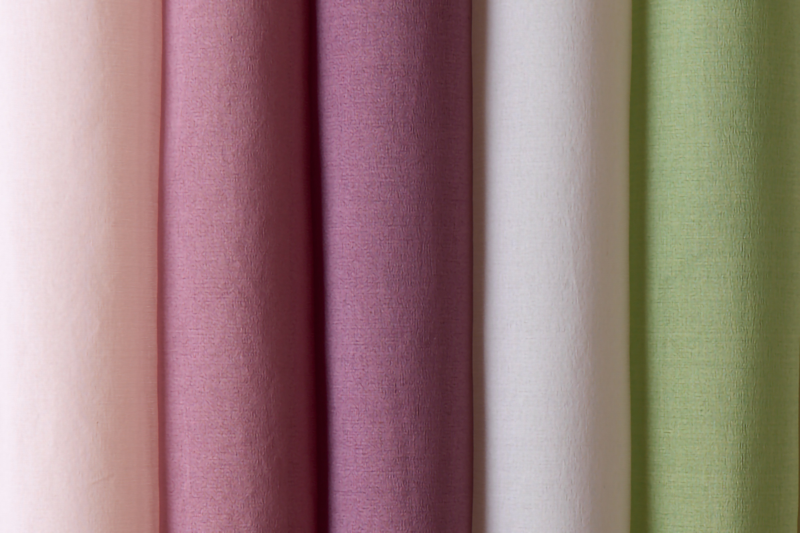
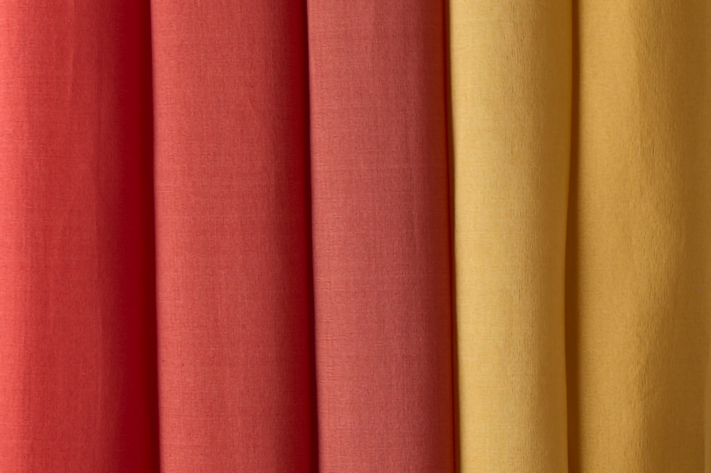
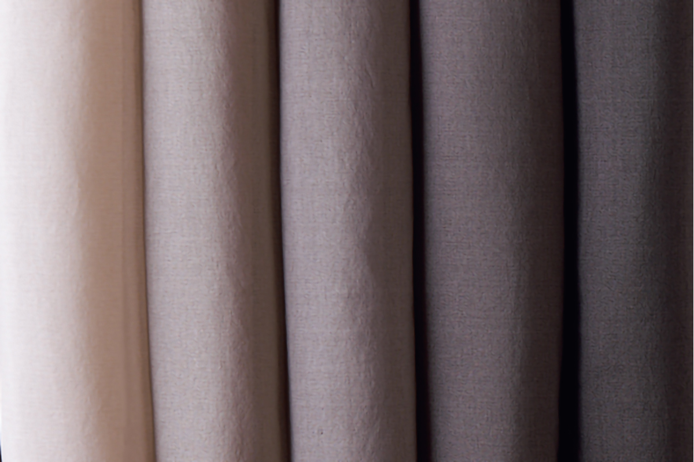
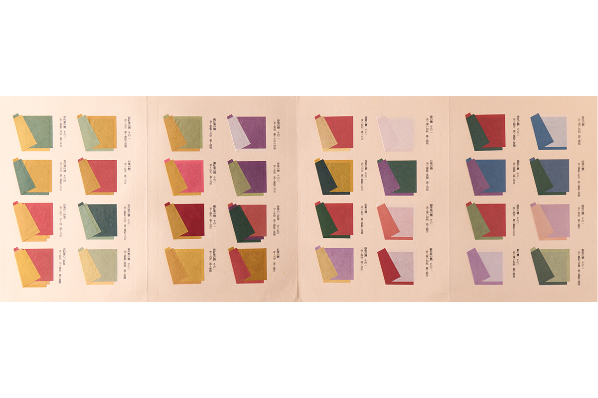
«С конца эпохи Хэйан до Нового времени активно изучали правила и обычаи двора. Тогда вышло много книг-справочников и о касанэ-но иромэ, и определённые сочетания цветов разошлись повсюду. Но, думаю, люди эпохи Хэйан обращались с цветом гораздо свободнее»
Сараса Ёсиока
Говорят, ни в одной стране нет столько названий цветов, сколько в Японии. Сараса Ёсиока считает, что дело в том, как близко японцы чувствовали природу и как тонко замечали её перемены.
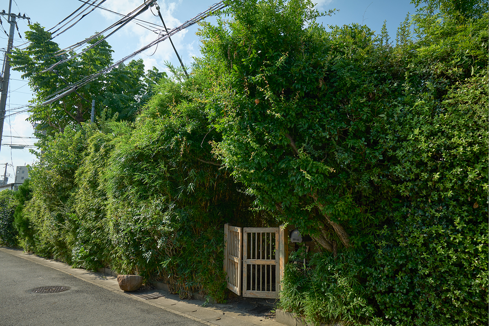
«С тех пор как я занялась крашением, я по пути в мастерскую всё острее замечаю, как меняются горы и деревья у дороги. Очень хочется передать эту красоту так, как это умели наши предки»
Сараса Ёсиока
В университете она изучала историю, и старинные вещи до сих пор её волнуют. Даже глядя на сокровища Сёсоина, давно выцветшие до коричневого, она, по её словам, видит их первоначальные яркие цвета, если знает, чем их красили. Восстанавливать древние цвета она собирается и дальше.
Мода
«Имаё-иро»: модный цвет тысячу лет назад
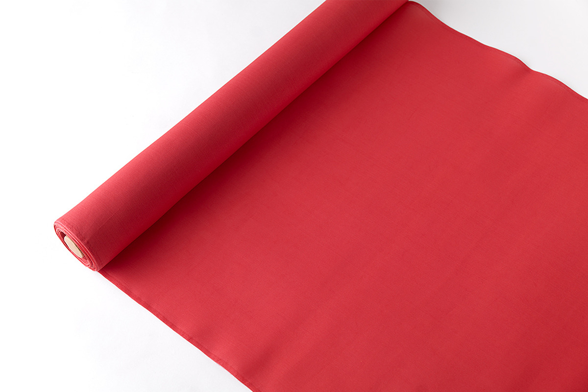
Среди придворных дам эпохи Хэйан особенно ценился очень густой красный цвет из сафлора. Его называли «имаё-иро», и «имаё» значит «по нынешней моде». Людям низкого звания разрешали носить «юруси-иро», «разрешённый цвет»: бледно-розовый, для которого на кусок шёлка в два отреза брали около 600 граммов сафлора. Для имаё-иро сафлора уходило больше чем вдвое, ткань красили снова и снова, и красный получался сияющим.
Пурпур
Каким был фиолетовый в «Повести о Гэндзи»
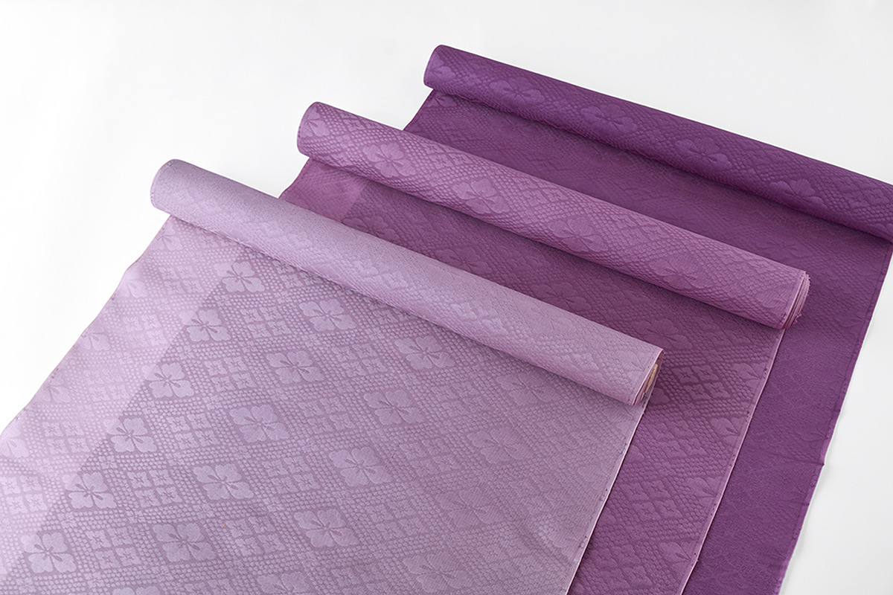
Фиолетовый с древности был цветом знати. В системе двенадцати придворных рангов, которую ввёл принц Сётоку-тайси (574–622), регент и покровитель буддизма, он принадлежал высшему рангу. В «Повести о Гэндзи» фиолетовый часто носят Гэндзи и другие знатные герои, но в тексте пишут «густой» или «светлый», а само слово «фиолетовый» не ставят. Своей самой любимой женщине, Мурасаки-но Уэ, Гэндзи дарит накидку цвета «эбидзомэ». Это глубокий фиолетовый с красноватым оттенком, на который уходит много корня воробейника.
Бумага
Окрашенная бумага для стихов и цветов
Придворные эпохи Хэйан постоянно обменивались письмами со стихами. Писали их на бумаге, окрашенной травами и деревьями, и цвета подбирали по сезону. Somenotsukasa Yoshioka сохранила это умение и красит бумагу для цветов, которые подносят на храмовых праздниках.
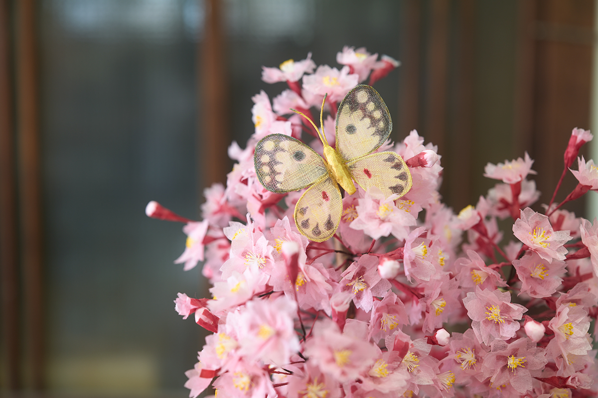
Магазин
Цвета Хэйан в повседневной жизни
Вещи, окрашенные растениями, продаются в киотском магазине мастерской в Гионе, на улице Симмондзэн, где стоят антикварные лавки и магазины чайной утвари. Здесь есть лёгкие шёлковые шарфы и мелочи из пеньки с мягкой фактурой.
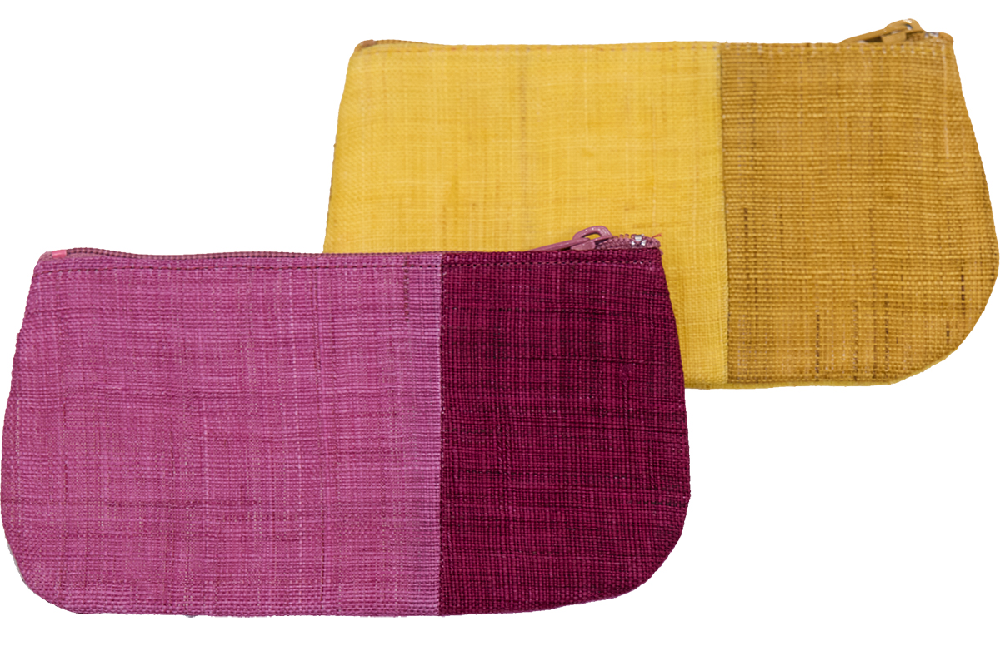
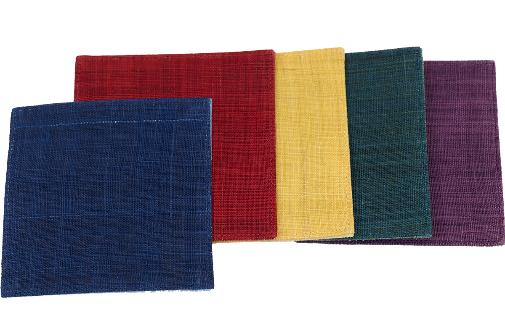
Обложки для книг выпускают во многих цветах: для книг формата синсё 3300 иен, для меньшего формата бунко 2750 иен (цены 2024 года).
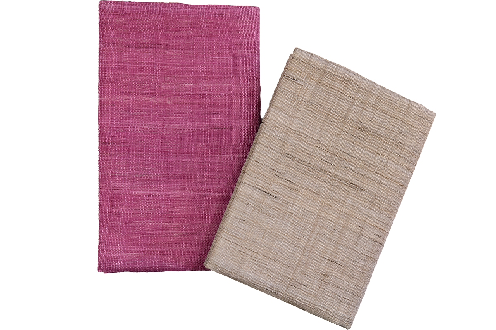
Somenotsukasa Yoshioka, магазин в Киото
- Адрес
- префектура Киото, Киото, район Хигасияма, Нисино-тё, 206-1
- Телефон
- +81 75-525-2580
- Часы работы
- 10:00–18:00
- Выходные
- среда
Фото: Марико Тая.